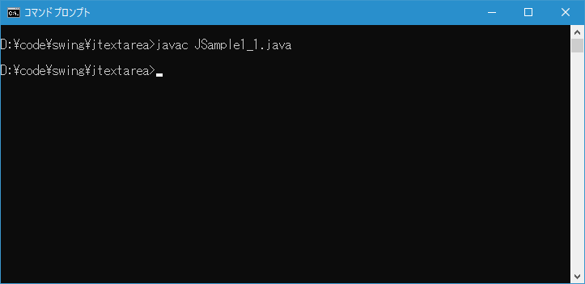
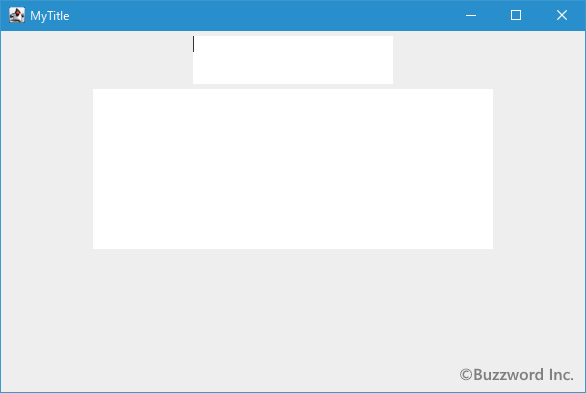
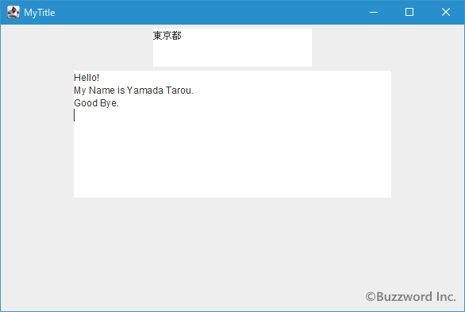
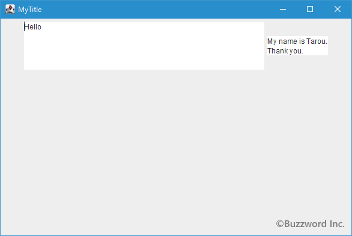

テキストエリアの作成と初期値や列数(幅)/行数の設定
テキストエリアを作成するには JTextArea クラスを使用します。ここでは JTextArea クラスの定義やコンストラクトについて確認します。またテキストエリアに初期値として値を設定する方法やテキストエリアの列数(幅)を設定する方法も解説します。
JTextAreaクラスの定義
JTextArea クラスは次のように定義されています。
java.lang.Object
java.awt.Component
java.awt.Container
javax.swing.JComponent
javax.swing.text.JTextComponent
javax.swing.JTextArea
public class JTextArea
extends JTextComponent
テキストエリアはコンポーネントの親クラスである JComponent クラスのサブクラスとなっています。またテキストを扱うクラス全般の親クラスである JTextComponent クラスのサブクラスでもあります。
JTextAreaクラスのコンストラクタ
JTextArea クラスをを利用するにはコンストラクタを使って JTextArea クラスのオブジェクトを作成します。次のようなコンストラクタが用意されています。
JTextArea()
新しいTextAreaを構築します。
JTextArea?(int rows, int columns)
指定された行数と列数で新しい空のTextAreaを構築します。
JTextArea?(String text)
指定された表示テキストで新しいTextAreaを構築します。
JTextArea?(String text, int rows, int columns)
指定されたテキストと行数と列数で新しいTextAreaを構築します。
JTextArea?(Document doc)
指定されたドキュメント・モデルと、ほかの引数はすべてデフォルト(null, 0, 0)で、新しいJTextAreaを構築します。
JTextArea?(Document doc, String text, int rows, int columns)
指定された行数と列数、および指定されたモデルで新しいJTextAreaを構築します。
テキストエリアに初期値を設定するかどうか、またテキストエリアの列数および行数を設定するかどうかでコンストラクタを選択してください。
次のコンストラクタでは初期値が null で列数が 0 のテキストフィールドを作成します。
public JTextArea()
新しいTextAreaを構築します。 デフォルト・モデルが設定され、初期文字列はnull、行/列数は0に設定されます。
実際の使い方は次のようになります。
JTextArea area = new JTextArea();
テキストフィールドと異なりテキストエリアでは入力されたテキストの量に応じて自動的に縦方向にも横方向にも拡張されるようにデフォルトでは設定されています。その為、列数や行数が 0 でも入力は行えますが、どこにテキストエリアがあるのか分かりにくいので実際にはメソッドを使って列数や行数を設定してから使用します。
テキストエリアの列数と行数を設定する
テキストエリアを列数と行数を指定して作成するには次のコンストラクタを使用します。
public JTextArea?(int rows,
int columns)
指定された行数と列数で新しい空のTextAreaを構築します。 デフォルト・モデルが作成され、初期文字列はnullに設定されます。
パラメータ:
rows - 行数>= 0
columns - 列数>= 0
例外:
IllegalArgumentException - 行または列の引数が負の数の場合。
1 番目の引数にはテキストエリアの高さに相当する行数を指定し、 2 番目の引数には幅に相当する列数を指定します。
テキストエリアの列数とは文字数と考えてください。例えば 10 と指定すれば 10文字分の文字が表示できるだけの幅となります。ただし 文字はそれぞれ幅が違うので、どんな文字でも 10 文字ぴったりとなるわけではありません。またあくまで見た目のサイズなので入力できる文字数とは関係がありません。フォントの設定によっても実際のサイズは変わってくるので、厳密にピクセル単位でサイズを指定するには別のページで解説する setPreferredSize メソッドを使います。
実際の使い方は次のようになります。
JTextArea? textarea = new JTextArea?(10, 40);
またテキストエリアを作成したあとで、列数や行数を設定したり再設定したりすることができます。テキストエリアの列数を設定するには JTextArea? クラスで用意されている setColumns メソッドを使います。
public void setColumns?(int columns)
このTextAreaの列数を設定します。 新しい値を設定したあとにinvalidate()を実行します。
パラメータ:
columns - 列数>= 0
例外:
IllegalArgumentException - columns 0より小さい場合
引数にはテキストエリアの幅を設定するための列数を指定します。
テキストエリアの行数を設定するには JTextArea? クラスで用意されている setRows メソッドを使います。
public void setRows?(int rows)
このTextAreaの行数を設定します。 新しい値を設定したあとにinvalidate()を呼び出します。
パラメータ:
rows - 行数>= 0
例外:
IllegalArgumentException - 行が0より小さい場合
引数にはテキストエリアの高さを設定するための行数を指定します。
実際の使い方は次のようになります。
JTextArea? textarea = new JTextArea?(); textarea.setColumns?(40); textarea.setRows?(10);
サンプルプログラム
それでは簡単なサンプルプログラムを作って試してみます。テキストエディタで次のように記述したあと、 JSample1_1.java という名前で保存します。
import javax.swing.JFrame;
import javax.swing.JTextArea;
import javax.swing.JPanel;
import java.awt.Container;
import java.awt.BorderLayout;
class JSample1_1 extends JFrame{
public static void main(String args[]){
JSample1_1 frame = new JSample1_1("MyTitle");
frame.setVisible(true);
}
JSample1_1(String title){
setTitle(title);
setBounds(100, 100, 600, 400);
setDefaultCloseOperation(JFrame.EXIT_ON_CLOSE);
JTextArea textarea1 = new JTextArea(3, 20);
JTextArea textarea2 = new JTextArea();
textarea2.setColumns(40);
textarea2.setRows(10);
JPanel p = new JPanel();
p.add(textarea1);
p.add(textarea2);
Container contentPane = getContentPane();
contentPane.add(p, BorderLayout.CENTER);
}
}
次のようにコンパイルを行います。
javac JSample1_1.java

コンパイルが終わりましたら実行します。
java JSample1_1
テキストエリアが 2 つ追加されました。それぞれ幅と高さが設定されています。

テキストエリアにはテキストフィールドと同じく利用者がテキストを入力することができます。またテキストエリアの場合には [Enter] キーを入力することで改行を行って複数行にわたるテキストを入力することができます。

テキストエリアに初期値を設定する
テキストエリアは利用者にテキストを入力してもらうためのコンポーネントですが、初期値として指定した文字列を設定しておくことができます。テキストエリアを初期値を指定して作成するには次のコンストラクタを使用します。
public JTextArea?(String text)
指定された表示テキストで新しいTextAreaを構築します。 デフォルト・モデルが作成され、行/列数は0に設定されます。
パラメータ:
text - 表示されるテキストまたはnull
引数には初期値として入力される文字列を String クラスのオブジェクトを使って指定します。このコンストラクタを使用した場合、テキストエリアのサイズは引数に指定した文字列がちょうど表示されるだけのサイズに設定されます。
もしも複数行に渡る文字列を初期値として指定したい場合には「¥n」を改行文字として指定して下さい。なおご利用の環境に関係なく改行は「¥n」を使って下さい。
また初期値に加えて列数と行数を指定することができます。次のコンストラクタを使用します。
public JTextArea?(String text,
int rows,
int columns)
指定されたテキストと行数と列数で新しいTextAreaを構築します。 デフォルト・モデルが作成されます。
パラメータ:
text - 表示されるテキストまたはnull
rows - 行数>= 0
columns - 列数>= 0
例外:
IllegalArgumentException - 行または列の引数が負の数の場合。
1 番目の引数には初期値として入力される文字列を String クラスのオブジェクトを使って指定します。 2 番目の引数にはテキストエリアの高さに相当する行数を指定し、 3 番目の引数には幅に相当する列数を指定します。
実際の使い方は次のようになります。
JTextArea? textarea1 = new JTextArea?("Hello!¥nBye!");
JTextArea? textarea2 = new JTextArea?("Thank's", 20, 10);
-- --
テキストエリアのオブジェクトを作成したあとで、テキストエリアに初期値を設定することもできます。 JTextArea クラスの親クラスである JTextComponent クラスで用意されている setText メソッドを使います。
public void setText?(String t)
このTextComponentのテキストに、指定されたテキストを設定します。 テキストがnullまたは空の場合は、古いテキストを単に削除する効果があります。 テキストが挿入されたときに結果として得られるキャレット位置は、キャレット・クラスの実装によって決定されます。
テキストはバウンド・プロパティではないため、それが変更されてもPropertyChangeEvent はトリガーされません。
テキストの変更を待機するには、DocumentListenerを使用してください。
パラメータ:
t - 設定する新しいテキスト
引数には初期値として入力される文字列を String クラスのオブジェクトを使って指定します。
実際の使い方は次のようになります。
JTextArea? textarea = new JTextArea?();
textarea.setText?("Thank's");
サンプルプログラム
それでは簡単なサンプルプログラムを作って試してみます。テキストエディタで次のように記述したあと、 JSample1_2.java という名前で保存します。
import javax.swing.JFrame;
import javax.swing.JTextArea;
import javax.swing.JPanel;
import java.awt.Container;
import java.awt.BorderLayout;
class JSample1_2 extends JFrame{
public static void main(String args[]){
JSample1_2 frame = new JSample1_2("MyTitle");
frame.setVisible(true);
}
JSample1_2(String title){
setTitle(title);
setBounds(100, 100, 600, 400);
setDefaultCloseOperation(JFrame.EXIT_ON_CLOSE);
JTextArea textarea1 = new JTextArea("Hello", 5, 40);
JTextArea textarea2 = new JTextArea();
textarea2.setText("My name is Tarou.\nThank you.");
JPanel p = new JPanel();
p.add(textarea1);
p.add(textarea2);
Container contentPane = getContentPane();
contentPane.add(p, BorderLayout.CENTER);
}
}
次のようにコンパイルを行います。
javac JSample1_2.java
コンパイルが終わりましたら実行します。
java JSample1_2
テキストエリアが 2 つ追加されました。 1 つ目は列と行を指定した上で初期値を設定しています。 2 つ目は初期値だけを設定しています。

初期値だけを設定した場合はテキストエリアのサイズが初期値のテキストがちょうど表示されるサイズに拡張されます。
-- --
JTextArea クラスの定義やコンストラクトについて確認し、テキストエリアに初期値として値を設定する方法やテキストエリアの列数(幅)を設定する方法も解説しました。
( Written by Tatsuo Ikura )

著者 / TATSUO IKURA
初心者～中級者の方を対象としたプログラミング方法や開発環境の構築の解説を行うサイトの運営を行っています。